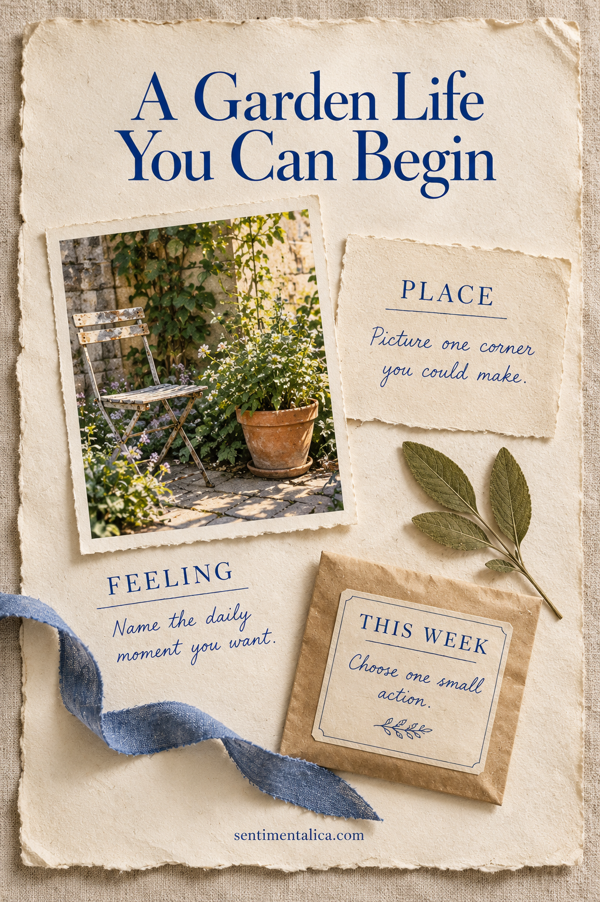
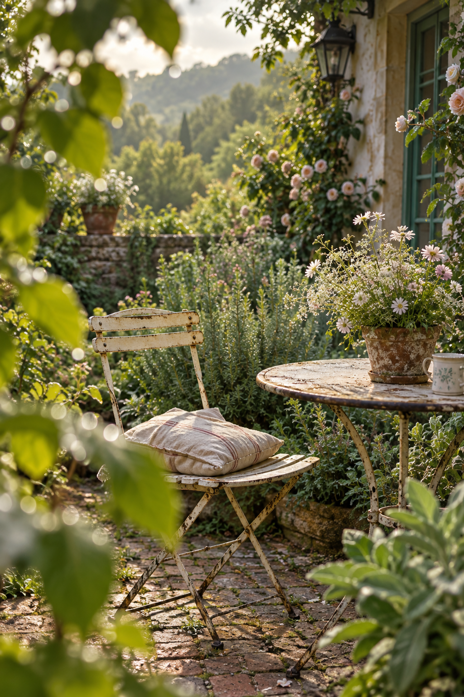

A garden vision page becomes useful when it pictures a life you can begin in a small way. You might imagine a balcony chair beside a pot, a narrow patch near the door, or a larger garden that will take time. Build the page around a place, a daily feeling, and one action this week. The pictures give the wish a shape; the action keeps it connected to your real days.

Choose a Corner Rather Than a Whole Life
Draw a loose rectangle for the place panel and name the corner you are imagining. Use an actual space if you have one. Mark the doorway, window, railing, or path that makes it recognizable. If the space is still a possibility, write ‘a place I hope for’ so the page remains honest about what exists now.
Add one image or sketch that communicates the scale. A chair, a small container, or a narrow path says more about daily use than a crowded collage of enormous gardens. You are choosing a scene you could spend time in, not collecting every beautiful idea at once.
A beautiful picture can hold the wish. A small action gives it somewhere to go.
Describe What an Ordinary Visit Feels Like
In a second panel, finish ‘I want to notice…’ with a sensory detail. It could be the sound of rain beyond the window, a leaf shadow on the table, or the texture of a worn chair. Choose one detail that would make the space feel inviting during an ordinary day.
Then write when you imagine using it. ‘Ten quiet minutes before breakfast’ is different from ‘a place to sit with a friend on Sunday.’ That small distinction helps you decide what belongs in the scene. A reading corner needs space for a book; a shared pause needs another seat.

Separate the Wish from the Next Action
The final panel should contain one action that is within reach this week. Measure the available corner, clear one shelf, sketch the balcony from the doorway, or write down questions to research before choosing plants. These are preparation steps, not a promise that the pictured garden will appear immediately.
Make the action observable: you should be able to say whether you did it. ‘Live more slowly’ is too broad for this panel. ‘Sit by the window for ten minutes and note the light’ leaves a record you can bring back to the page. Give the action a day if that helps.
Use Repetition to Connect the Panels
Give the place panel the largest image. Let the feeling panel contain mostly words, with a small repeated color or torn edge. Keep the action panel plain enough to update. You can make the page from ordinary paper, a pencil, and a single image; a large pile of supplies is unnecessary.
Choose a restrained palette that supports the scene rather than filling every gap. Repeat one botanical detail in two places, then stop. Leave enough blank paper around the action that it looks usable. A vision page should offer a place to think, not demand a particular decorative finish.
Return with Evidence from Your Own Week
After trying the action, add a dated note beneath it. You might discover that the corner is smaller than expected, that you prefer afternoon light, or that the chair needs to move. These observations give the next version of the page something real to work with.
Keep the earlier wish visible instead of covering it with a better-looking picture. Your page can show how an imagined life meets an actual space. When you are ready, choose another small action using what you noticed. You do not need to complete a garden to have begun a relationship with the place you hope to make.
Find more gentle paper projects in the Sentimentalica journal.